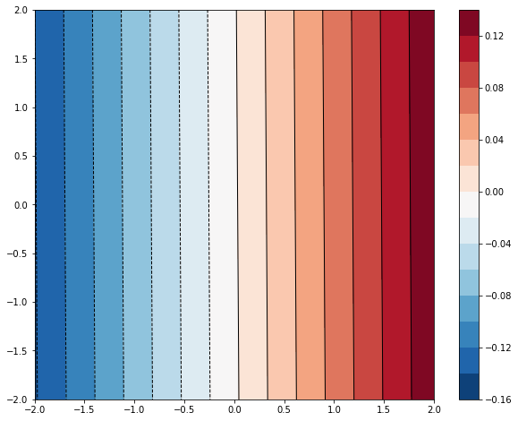
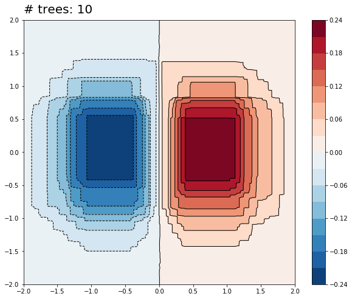
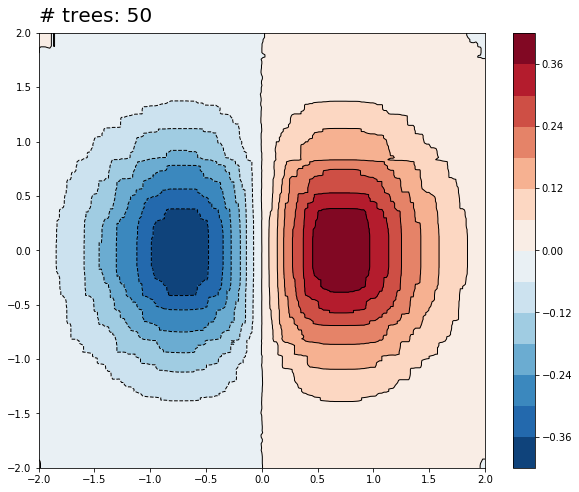

Visualización del ajuste de boosted trees en regresion¶
30 min | Última modificación: Julio 12, 2019.
Adaptado de https://www.tensorflow.org/tutorials/estimators/boosted_trees_model_understanding?hl=es
Preparación¶
[1]:
import numpy as np
import pandas as pd
import matplotlib.pyplot as plt
%matplotlib inline
[2]:
from scipy.interpolate import griddata
Datasets¶
[3]:
##
## Datos para entrenamiento
##
npts = 5000
np.random.seed(0)
x = np.random.uniform(-2, 2, npts)
y = np.random.uniform(-2, 2, npts)
z = x*np.exp(-x**2 - y**2)
df = pd.DataFrame({
'x': x,
'y': y,
'z': z,
})
NUM_EXAMPLES = len(z)
[4]:
##
## Datos para pronóstico
##
xi = np.linspace(-2.0, 2.0, 200),
yi = np.linspace(-2.1, 2.1, 210),
xi, yi = np.meshgrid(xi, yi);
df_predict = pd.DataFrame({
'x' : xi.flatten(),
'y' : yi.flatten(),
})
predict_shape = xi.shape
Graficación del contorno¶
[5]:
def plot_contour(x, y, z, **kwargs):
plt.figure(figsize=(10, 8))
CS = plt.contour(
x,
y,
z,
15,
linewidths=1.0,
colors='k')
CS = plt.contourf(
x,
y,
z,
15,
cmap='RdBu_r')
plt.colorbar()
plt.xlim(-2, 2)
plt.ylim(-2, 2)
[6]:
zi = griddata(
df[['x', 'y']].values,
df.z,
(xi, yi),
method='linear')
plot_contour(xi, yi, zi)
plt.scatter(df.x, df.y, marker='.')
plt.title('Contour on training data');

Regresión lineal¶
[7]:
from sklearn.linear_model import LinearRegression
linearRegression = LinearRegression(
fit_intercept=True,
normalize=False)
linearRegression.fit(
df[['x', 'y']].values,
df.z)
plot_contour(
xi,
yi,
linearRegression.predict(
df_predict[['x', 'y']].values).reshape(predict_shape))
Gradient Boosting Regressor¶
[8]:
from sklearn.ensemble import GradientBoostingRegressor
def create_gbt(n_estimators):
gradientBoostingRegressor = GradientBoostingRegressor(
loss='ls',
learning_rate=0.1,
n_estimators=n_estimators,
subsample=1.0,
criterion='friedman_mse',
min_samples_split=2,
min_samples_leaf=1,
min_weight_fraction_leaf=0.0,
max_depth=6,
min_impurity_decrease=0.0,
init=None,
random_state=12345,
max_features=None,
alpha=0.9,
verbose=0,
max_leaf_nodes=None,
warm_start=False,
presort='auto',
validation_fraction=0.1,
n_iter_no_change=None,
tol=0.0001)
gradientBoostingRegressor.fit(
df[['x', 'y']].values,
df.z)
plot_contour(
xi,
yi,
gradientBoostingRegressor.predict(
df_predict[['x', 'y']].values).reshape(predict_shape))
plt.text(-2.0, 2.1, '# trees: {}'.format(n_estimators), size=20);
[9]:
create_gbt(1)

[10]:
create_gbt(5)

[11]:
create_gbt(10)

[12]:
create_gbt(20)

[13]:
create_gbt(50)
